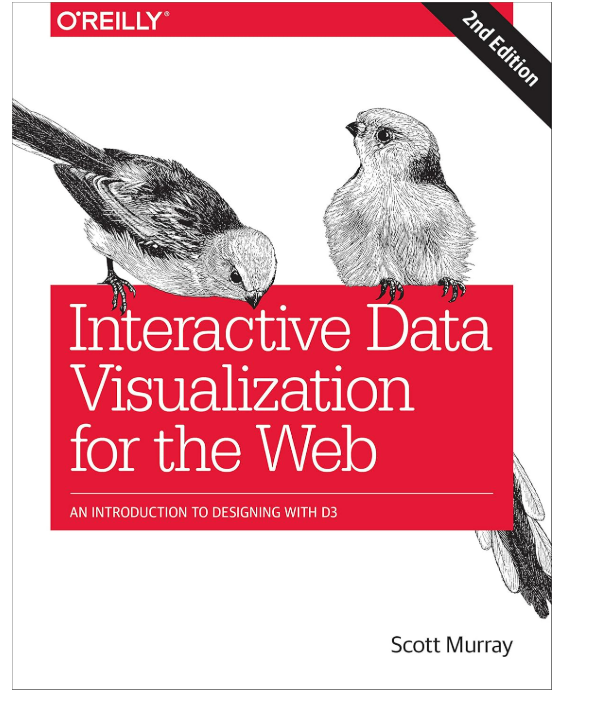

1. الساعات المعتمدة: (4) ساعات
2. نوع المقرر:
أ. متطلب جامعة متطلب كلية X متطلب قسم مسار أخرى
ب. X إجباري اختياري
3. المستوى/السنة: (السنة الثالثة / المستوى الخامس)
4. الوصف العام للمقرر:
يركز هذا المقرر على مبادئ وتقنيات تصميم تصورات البيانات الفعالة في سياق التفاعل بين الإنسان والحاسوب (HCI). سيتعلم الطلاب كيفية تمثيل البيانات المعقدة بطرق بديهية وتفاعلية، مع الاستفادة من مبادئ التصميم وعلم النفس المعرفي وأدوات التصور. تشمل المواضيع: الإدراك البصري، سرد القصص بالبيانات، وإنشاء واجهات بصرية تركز على المستخدم لتعزيز اتخاذ القرار وتجربة المستخدم.
5. المتطلبات السابقة:
HCI2203 - أبحاث المستخدم
DS2201 - مقدمة في قواعد البيانات
6. المتطلبات المصاحبة: لا يوجد
7. الهدف الرئيسي للمقرر:
| م | نمط التدريس | ساعات الاتصال | النسبة المئوية |
|---|---|---|---|
| 1 | الفصول الدراسية التقليدية | 90 | 100% |
| م | النشاط | ساعات الاتصال |
|---|---|---|
| 1 | المحاضرات | 30 |
| 2 | المختبر / الاستوديو | 60 |
| الإجمالي | 90 |
| الرمز | مخرجات تعلم المقرر | رمز مخرجات البرنامج | استراتيجيات التدريس | طرق التقييم |
|---|---|---|---|---|
| 1.0 المعرفة والفهم | ||||
| 1.1 | إظهار المعرفة التأسيسية بالإدراك البصري ومبادئ HCI. | K1 | المناقشات، دراسة الحالات | التكليفات / الاختبارات |
| 1.2 | تحليل البيانات المعقدة وتحديد تقنيات التصور المناسبة لتمثيلها. | K2 | العروض العملية، دراسة الحالات | التكليفات / المشروع |
| 1.3 | شرح أهمية تصميم التصور الشامل وسهل الوصول. | K3 | المناقشات، دراسة الحالات | الاختبارات / المشروع |
| 2.0 المهارات | ||||
| 2.1 | استخدام أدوات وتقنيات التصور الحديثة لإنشاء واجهات تفاعلية. | S1 | العروض العملية، التجارب | التكليفات / المشروع |
| 2.2 | التواصل الفعال حول خيارات تصميم التصور ومواءمتها مع احتياجات المستخدم. | S3 | المناقشات، نقد التصميم | العروض التقديمية / المشروع |
| 2.3 | تطبيق طرق التصميم التكراري والنماذج الأولية لتحسين التصورات. | S4 | التجارب، العروض العملية | التكليفات / المشروع |
| 3.0 القيم، الاستقلالية والمسؤولية | ||||
| 3.1 | إظهار المسؤولية المهنية والحكم الأخلاقي في تصميم تصورات صادقة. | V1 | دراسة الحالات، المناقشات | التكليفات / الاختبارات |
| 3.2 | الدعوة للشمولية من خلال تصميم تصورات بيانات عادلة لجميع المستخدمين. | V2 | دراسة الحالات، المناقشات | الاختبارات / المشروع |
| م | قائمة الموضوعات | ساعات الاتصال |
|---|---|---|
| 1 | مقدمة في تصور البيانات | 6 |
| 2 | مبادئ الإدراك البصري | 6 |
| 3 | التصميم باستخدام البيانات | 12 |
| 4 | أدوات وتقنيات التصور | 12 |
| 5 | سرد القصص بالبيانات | 6 |
| 6 | التفاعل والتحريك في التصورات | 6 |
| 7 | تقييم واختبار التصورات | 6 |
| 8 | إمكانية الوصول في تصميم التصور | 6 |
| 9 | مواضيع متقدمة في التصور | 12 |
| 10 | الأخلاقيات في تصور البيانات | 6 |
| 11 | الاتجاهات الحديثة في تصور البيانات | 6 |
| 12 | التوليف والمراجعة | 6 |
| الإجمالي | 90 | |
| م | أنشطة التقييم | توقيت التقييم (بالأسبوع) | النسبة من إجمالي الدرجة |
|---|---|---|---|
| 1 | التكليفات | 3-14 | 10% |
| 2 | المشروع | 3-14 | 30% |
| 3 | الاختبار النصفي | 7-8 | 20% |
| 4 | الاختبار النهائي | 16-17 | 40% |

المرجع الأساسي:
تصور البيانات التفاعلي للويب - سكوت موراي (2020)